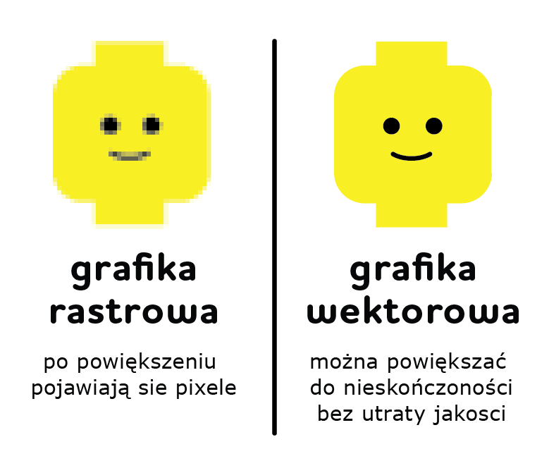

Rastrowa
Grafika Rastrowa
Grafika rastrowa, zwana również grafiką bitmapową, to rodzaj obrazu komputerowego składającego się z siatki małych punktów, zwanych pikselami. Każdy piksel ma określony kolor i połączenie wielu pikseli tworzy kompletny obraz. Ten typ grafiki jest powszechnie stosowany w fotografii cyfrowej, malarstwie cyfrowym oraz w wielu innych dziedzinach wizualnych.
- 📌 JPEG (JPG) – Kompresja stratna, idealny format do zdjęć.
- 📌 PNG – Obsługuje przezroczystość, używany w grafice internetowej
- 📌 GIF – Obsługuje animacje, ale ma ograniczoną paletę kolorów (256).
- 📌 BMP – Surowy format bez kompresji, zajmuje dużo miejsca.
- 📌 TIFF – Format bezstratny, często wykorzystywany w druku.
Najpopularniejsze formaty plików rastrowych:
Grafika rastrowa jest doskonałym rozwiązaniem do tworzenia obrazów, które mają odwzorować rzeczywistość w jak najwierniejszy sposób, szczególnie w przypadku zdjęć, ilustracji, tekstur czy innych detali. Jest jednak mniej elastyczna niż grafika wektorowa, szczególnie jeśli chodzi o skalowanie obrazów do różnych rozmiarów. Jest to jednak niezastąpiona technika w dziedzinach takich jak fotografia cyfrowa, sztuka komputerowa, animacje czy multimedia.
Przykłady:
Porownanie grafiki rastrowej i wektorowej:
Grafika rastrowa jest szczegółowa i lepsza do tworzenia zdjęć i obrazów
Grafika wektorowa jest lepsza do tworzenia logotypów i wizualizacji, ponieważ pozwala na łatwą edycję i skalowanie
